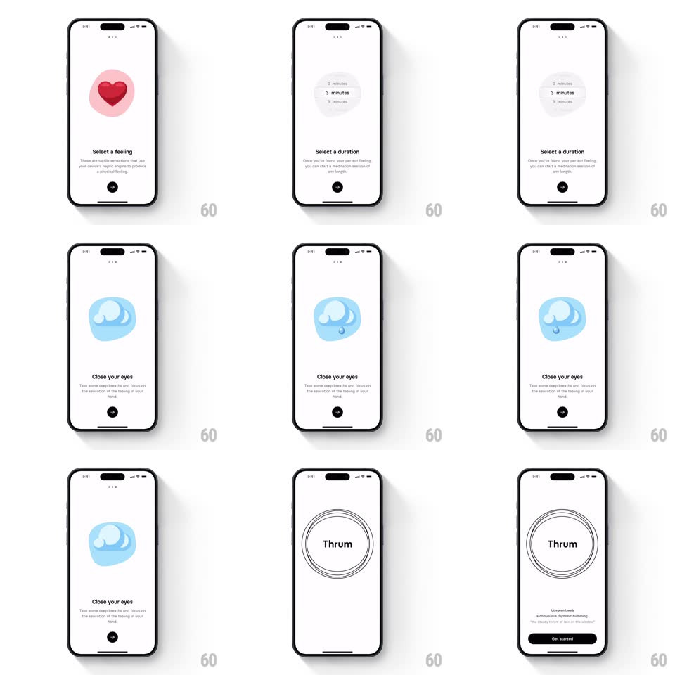

Media
Frame-by-frame

Rebuild this interaction 1:1: Thrum's get-started story slides - horizontally sliding steps ("Select a feeling" with a heart, "Select a duration" with a wheel picker, "Close your eyes" with water art) ending on the Thrum wordmark inside thin concentric rings with a Get started button.

Rebuild this interaction 1:1: Thrum's get-started story slides - horizontally sliding steps ("Select a feeling" with a heart, "Select a duration" with a wheel picker, "Close your eyes" with water art) ending on the Thrum wordmark inside thin concentric rings with a Get started button.
## Integration
Integration: stack-agnostic spec - springs given as stiffness/damping, timed motions as duration + curve; map every value to your framework and animation library of choice.
## Scene
White screens with page dots top-center. Step 1: pink heart illustration, "Select a feeling" + explainer, circular black next-arrow button. Step 2: duration wheel picker ("3 minutes" centered, 2/5 minutes ghosted above/below), same layout. Step 3: blue water-drop illustration, "Close your eyes". Final: "Thrum" centered inside hand-drawn concentric circles, small definition text below, black Get started pill.
## Motion spec
Pattern: story-step pager with shared layout.
- Tap next (or swipe): the current slide exits left (translate -100% width, 320ms ease-in-out) while the next enters from the right; illustration, title, and body move as one locked group.
- Page dots update on settle (active dot stretches into a pill, 200ms).
- Illustrations idle subtly: the heart beats (scale 1 -> 1.06, 1.2s), the water ripples.
- The duration wheel scrolls with deceleration and snap-to-row (spring ~320/26); the centered row enlarges + darkens, off-center rows fade to 30%.
- Final slide: the concentric rings draw in (trim animation, 800ms, slightly wobbly hand-drawn feel), "Thrum" fades up, then Get started rises 16px + fades (300ms).
## Calibration
- Every step keeps identical layout geometry - only content swaps, so the slides read as one continuous page.
- The next-arrow button is fixed at the same position across steps (becomes Get started on the last).
## Reduced motion
Slides crossfade in place; rings appear fully drawn.
## Don't miss
- The wheel picker is part of step 2's slide, not a modal - it slides in with the rest.
- The final rings are deliberately imperfect (variable stroke) - keep the hand-drawn wobble.